![]()
flowchart TB
A([データの加工 <br> <strong>dplyr</strong> <br> 例 select filter]) --- B([データの可視化 <br> <strong>ggplot2</strong> <br> 例 geom_bar])
Ⅰ. 前回の振り返り
1. 前回の「授業の感想」
- 別紙参照
2. 前回の補足：多様な数字の型
- num: numeric, 数値
- int: integer（整数）
- dbl: double（倍精度浮動小数点型、簡単に言えば実数）
integer型とdouble型
- 意識的に区別して使う場面はあまりない
- 作図する際も支障はない
- 自分で作成するnumeric型のベクトルはすべてdouble型となる
3. 教員の作業ファイルの共有
- 毎回授業後に、教員の作業ファイルをアップロードします。何をどうしたのか、わからない場合はこのファイルを使って確認して下さい
- Google Drive
授業用.qmdだけでなく、フォルダ（例：imgフォルダ）も必ずダウンロードしてください。たとえば、qmdでimgフォルダ内の画像を指定しているため、フォルダも一緒にダウンロードしなければエラーがおこります（エラー「imgファイルがありません」）
4. 基本的な流れ：dplyrとggplot


Ⅱ. 実習ファイルの確認
1. セットアップチャンクの作成（設定）
- 実習ファイルのYAML（—で囲まれた次の箇所）以下を次の状態にして下さい（setupチャンクの作成）
- パッケージやデータの読み込みのために使うチャンクです（個々のチャンクのすべてにかかわるものに使います）
- #コメントアウト以降は必須ではありません
- 備忘として必要な方は入力して下さい
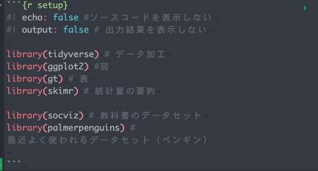
- 以下のコードを先のチャンクの冒頭に加えて、上記の画像と同じ状態にして下さい
#| echo: false #ソースコードを表示しない
#| output: false # 出力結果を表示しない
2. 空白文字の可視化
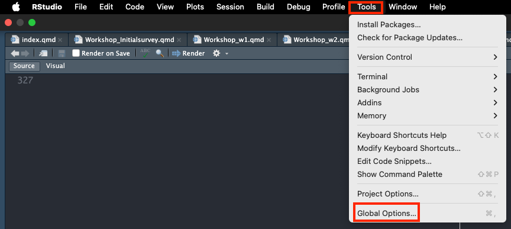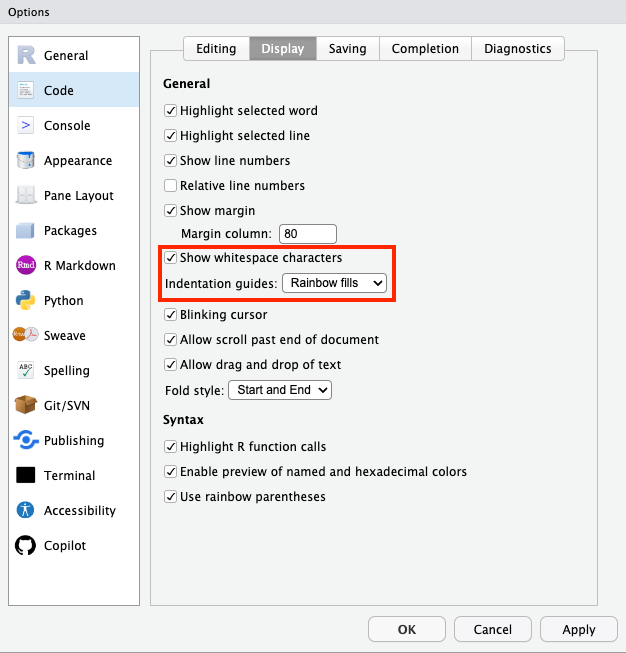
Ⅲ. データの読み込み
1. csv: read_csv()関数
- Google Drive「データ」から、sampleデータ（sample.csv）を入手（初回アンケートから10,000人分のサンプルデータを作成）
- qmdファイルと同じ階層に「data」フォルダを作り、sample.csvを収納
- 新しくRチャンクを作り、read_csv（）関数を使ってデータを読み込む
- データフレームの型とデータの型を確認
df_アンケート <- # 以下のコードで読み込んだデータを、df_アンケートというオブジェクトに格納
read_csv("data/sample.csv") # read_csv()関数を使ってデータを読み込み
df_アンケート %>% # データフレームを指定
head() # 最初の10行を出力し、データフレームの型とデータの型を確認# A tibble: 6 × 6
学域 学年 Q1.パソコンのスキルに自信がありま…¹ Q2.R言語を知っていま…²
<chr> <chr> <dbl> <dbl>
1 理工学域 2年生 2 4
2 人間社会学域 3年生 2 2
3 融合学域 4年生 3 2
4 融合学域 3年生 1 3
5 融合学域 3年生 1 4
6 人間社会学域 4年生 5 2
# ℹ abbreviated names: ¹Q1.パソコンのスキルに自信がありますか,
# ²Q2.R言語を知っていますか.
# ℹ 2 more variables: Q3.プログラム言語を使ったことはありますか <dbl>,
# Q4.可視化したいデータはありますか <chr>
オブジェクトの命名規則
- 代入演算子を使って新たに作成するオブジェクトの名前は任意ですが、各自、命名規則を意識して名前を付けましょう
- データフレームは、df、dat、dなどが一般的です
- 代入演算子で作成するオブジェクトは、図、計算結果、自作関数など多数あり得ます。一目で区別が付くものがよいでしょう
- plot_任意の文字、result_任意の文字、function_任意の文字
Note
- read_csv()関数はデータフレームをtibble型（tidyverse = ggplotに最適化されたデータフレーム）に変換してくれる
- as_tibble()関数を使う必要がない
- Cf. read.csv()関数は、data.frame型で、ggplotに最適化されないデータフレーム形式で読み込むので注意すること
文字コード
- Windows標準（日本）のCP932形式（Shift_JIS）で作成されたファイルを読み込むには、文字コードを指定する必要あり（文字化けの原因のほとんどは文字コードに起因する）
- 現在の世界標準の文字コードはユニコード(UTF-8)（特別の指定なく読み込める）
read_csv("filename.csv"
, locale = locale(encoding = "cp932"))
2. エクセルファイル: readxl()関数
- tidyverseパッケージに入っていないので、追加インストールが必要。Console（画面左下）に以下のコードを入力して実行（enter）
install.packages("readxl")- setupチャンクに、library()関数を使って、readxlを読み込ませる
library(readxl)
- 新しくRチャンクを作り、以下のコードを実行
df_アンケート_エクセルファイル <-
read_excel("data/sample.xlsx")
df_アンケート_エクセルファイル %>% # データフレームを指定
head() # 最初の10行を出力し、データフレームの型とデータの型を確認# A tibble: 6 × 6
学域 学年 Q1.パソコンのスキルに自信がありま…¹ Q2.R言語を知っていま…²
<chr> <chr> <dbl> <dbl>
1 理工学域 2年生 2 4
2 人間社会学域 3年生 2 2
3 融合学域 4年生 3 2
4 融合学域 3年生 1 3
5 融合学域 3年生 1 4
6 人間社会学域 4年生 5 2
# ℹ abbreviated names: ¹Q1.パソコンのスキルに自信がありますか,
# ²Q2.R言語を知っていますか.
# ℹ 2 more variables: Q3.プログラム言語を使ったことはありますか <dbl>,
# Q4.可視化したいデータはありますか <chr>read_excel()関数もデータフレームをtibble型（tidyverse = ggplotに最適化されたデータフレーム）に変換してくれる
3. データの読み込みと型
- ファクター（カテゴリー）の方が便利でも、読み込んだ時は、数字か文字列
- 自分でファクターにする必要がある（dplyrパッケージ。次回以降に説明）
初回アンケートを例に
- ※学域、学年は「文字」（chr）として認識されているが、集計、可視化するうえでは、カテゴリーとして扱った方が便利（文字＝文字コードとして扱うことに意味はない）
- 詳しくは次回以降で説明
この場合は実数と文字列が構造の情報として出力されます。読み込み時にデータ型が表示されることで、意図した通りにデータが読み込まれているかを確認するのに役立ちます。具体的には数値列として扱いたい列に文字列が含まれてしまっているために文字列型で読み込んでしまった場合に、この表示によって間違いの発見が早まることがあります。先に述べた通り、データ型によって適用できる処理に違いがあります。csvファイルの読み込み関数には、関数名に「_」を使わずに、「.」を使ったread.csv()関数が利用されることもあります。これはR標準の関数です。この違いの1つは,read_csv()関数では文字列をあらかじめ因子型に変換しないことです。これはデフォルトで文字列を因子型として扱うread.csv()関数とは対照的です。データを因子化しておくと、Rでは有益な機能があります(特に実験などで複数の処理や対照グループが存在するとき)が、それは常に必要なものではありません。意図しないデータの変換によるユーザの混乱を防ぐためにread_csv()関数ではこのような実装となっています（ヒーリー，キーラン (2021), 91-92ページ）
教科書（91ページ）の実例は、ウェブサイト上のデータを読み込むものです。通常、ローカルデータを使うことが一般的ですので、作業は省略します。興味がある人は実行してみて下さい
ファイルの読み込み、書き出しについては、Rで読むExcelファイルが有益です
Ⅳ. 図を作ってみる
1. 最初の図を作ろう
教科書93-94ページにしたがって作業して下さい
- setupチャンクに、library()関数を使って、gapmainderを読み込む
- 新しいチャンクを作って、データを確認する
# A tibble: 6 × 6
country continent year lifeExp pop gdpPercap
<fct> <fct> <int> <dbl> <int> <dbl>
1 Afghanistan Asia 1952 28.8 8425333 779.
2 Afghanistan Asia 1957 30.3 9240934 821.
3 Afghanistan Asia 1962 32.0 10267083 853.
4 Afghanistan Asia 1967 34.0 11537966 836.
5 Afghanistan Asia 1972 36.1 13079460 740.
6 Afghanistan Asia 1977 38.4 14880372 786.skim(), head(), view()関数は、データを確認するうえでとても重要です。いま、自分が何をしているのか、またエラーが出て対処できなくなったときは、まずデータを確認する癖をつけましょう
- 図を作ってみましょう。上と同じチャンクに以下のコードを書いてみましょう
教科書とは異なり、パイプを使ってコードを書いています。また、省略可能な関数は省略しています（教科書は原則を教えるために、まずパイプなしの書き方を教えていますが、実際はパイプを使ったコードを推奨しています）
gapminder %>%
ggplot(aes(gdpPercap, lifeExp)) +
geom_point()
カラム名を指定して操作している点に注意（わかりやすく、短いカラム名にすることが大事）
- 余裕がある受講生は、他のカラムも使って図を作ってみましょう。散布図はデータの型が数字である二つのデータが必要です
gapminder %>%
ggplot(aes(gdpPercap, pop)) +
geom_point()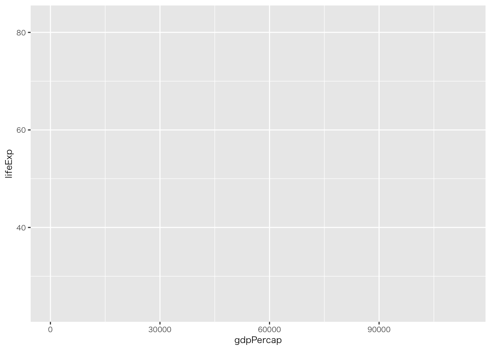
2. ggplotはどうやって動くのか
ggplotを使う上で最も大切なことは、ggplotを使って作りたいプロットの論理的な構造を考えることです。あなたが記述するコードはデータにある変数（群）と、色・点・形状といったスクリーンに表示される要素を結びつけます。ggplotでは、こうしたデータとプロット要素の接続性は、審美的要素のマッピング (aesthetic mappings) もしくは単に審美的要素（エセティクス, aesthetics） と呼ばれます。プロットを作り始めるには、常に、まずggplot()関数を使ってどのデータを使うのか、データの中のどの変数をプロットの審美的要素として論理的にマップするのかを指定します。その結果を受けてから、作りたいグラフの種類（散布図、箱ひげ図、棒グラフなど）を指定します。ggplotではこうしたプロットのタイプはgeom（ジオム）と呼ばれます。それぞれのgeomには対応する作図関数があります。例えば、geom_point()関数は散布図を、geom_bar()関数は棒グラフを、geom_boxplot()関数は箱ひげ図を作るといった具合です（ヒーリー，キーラン (2021), 99-100ページ）
図3.1は、ggplotの仕組みが端的に表現されており、とても重要です。ggplotの理解が怪しい場合、わからなくなった場合は、常にこの図に立ち戻ってください
3. マッピングとデータ
⑴ ggplotが必要とするもの
- 図にする対象のデータフレーム
- dataで指定（パイプを使う場合は省略）
- データフレームのうちの、図にするデータ（カラム）
- mappingで指定（mappingという文字は省略可能）
- x軸とy軸の指定
コードが横に長くなる場合は、適宜、改行を入れて、読みやすいコードを書く癖をつけること
# xとyも、指定しなくても、ggplotがよしなに考えてくれる
# ただしレイヤーを重ねるような複雑な図を作る場合は、xとyを指定した方がいい
gapminder %>%
ggplot(aes(gdpPercap, lifeExp)) 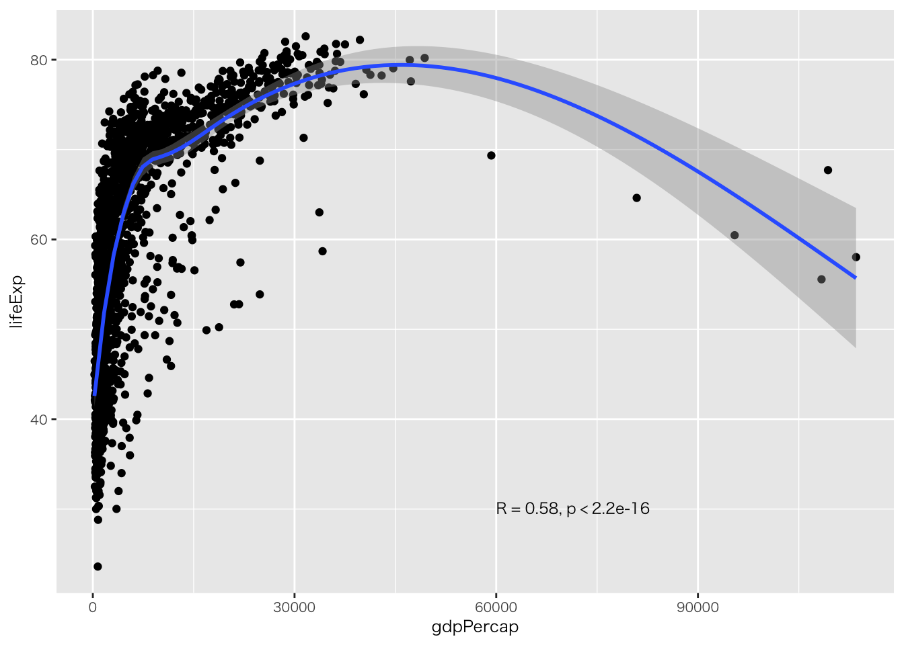
- geom_関数の指定
gapminder %>%
ggplot(aes(gdpPercap, lifeExp)) +
geom_point()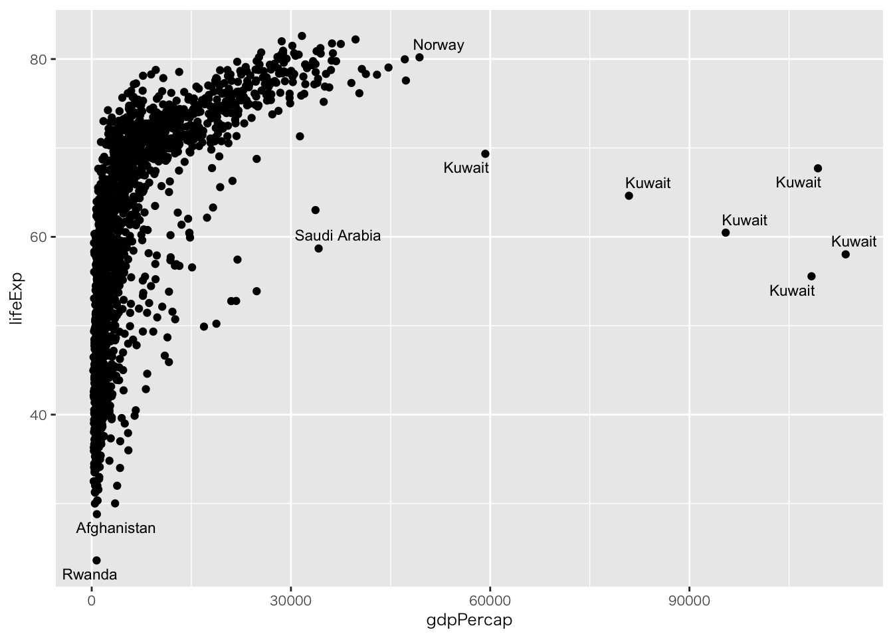
図に適さないオブジェクト（カラム名）を指定しても、意味のある図は作成できない
gapminder %>%
ggplot(aes(country, lifeExp)) +
geom_point()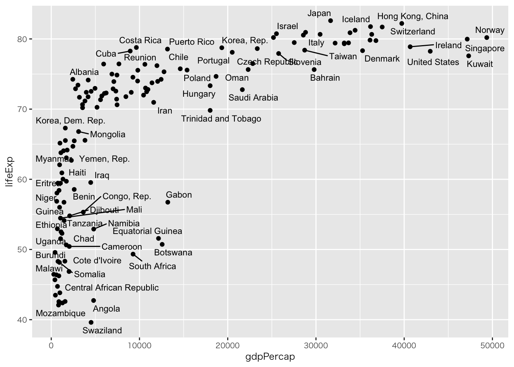
4. レイヤーを足す
- レイヤーを重ねて図を作成する
- 重ねる際は「%>%」（パイプ）ではなく「+」を使う
- mappingで指定したデータをgeom_関数は継承する
- ➡ 複数のgeom関数に共通するデータはmappingで指定する
⑴ 平滑化曲線を足す
gapminder %>%
ggplot(aes(gdpPercap, lifeExp)) +
geom_point() +
geom_smooth()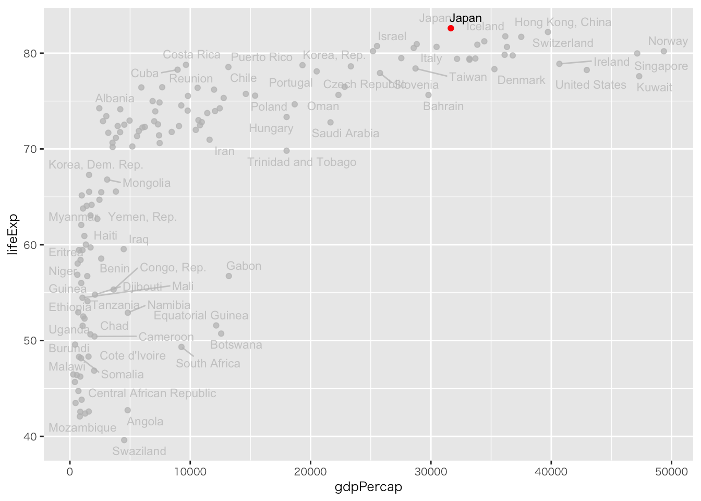
実践を重ねて、レイヤーを重ねるイメージを掴もう
ここから先は授業時間に余裕がある受講生だけ取り組んで下さい（授業時間内にできない場合は、各自で取り組んで下さい）
⑵ 相関係数を追加する
パッケージの追加
- ggpubrはggplotパッケージに入っていません
- 試してみたい場合は、ggpubrを追加して下さい
gapminder %>%
ggplot(aes(gdpPercap, lifeExp)) +
geom_point() +
geom_smooth() +
stat_cor(method = "pearson", label.x = 60000, label.y = 30) # 相関係数を析出（ピアソン）。label.xとlabel.yは析出結果をプロットする位置を指す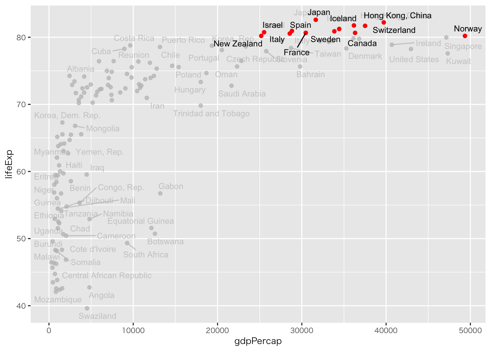
⑶ ラベル（国名）を足す
パッケージの追加
- geom_text_repelはggplotパッケージに入っていません
- 試してみたい場合は、ggrepelを追加して下さい
gapminder %>%
ggplot(aes(x = gdpPercap, y = lifeExp, label = country)) + # countryは文字型ベクトルなのでラベルとして使用できる
geom_point() +
geom_text_repel(size = 3, max.overlaps = 10) # sizeは文字サイズ、max.overlapsはテキストの重なりの最大値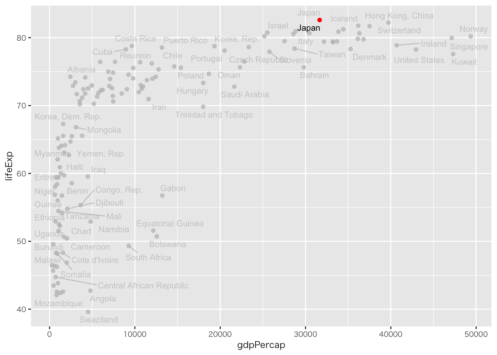
？？？クエートが複数ある（データフレームを確認すると、yearは複数年の情報がある）
⑷ 条件を満たすオブジェクトをハイライトする
パッケージの追加
- gghighlightはggplotパッケージに入っていません
- 試してみたい場合は、gghighlightを追加して下さい
Ⅴ. 実習
- 持参したデータで上記のコードを復習してみよう
- データがない場合は
- penguinsデータセットを使ってみよう（csvの読み込みはありません）
- 本日、冒頭に読み込み作業した「初回アンケート」のサンプルデータを使ってみよう（ただしこのデータは散布図には向いていません）
1. palmerpenguins

前回の授業でインストールしているはずです。なければインストールしてください
library(palmerpenguins)
# A tibble: 6 × 8
species island bill_length_mm bill_depth_mm flipper_length_mm body_mass_g
<fct> <fct> <dbl> <dbl> <int> <int>
1 Adelie Torgersen 39.1 18.7 181 3750
2 Adelie Torgersen 39.5 17.4 186 3800
3 Adelie Torgersen 40.3 18 195 3250
4 Adelie Torgersen NA NA NA NA
5 Adelie Torgersen 36.7 19.3 193 3450
6 Adelie Torgersen 39.3 20.6 190 3650
# ℹ 2 more variables: sex <fct>, year <int>2. 初回アンケートサンプルデータ
df_アンケート %>%
ggplot(aes(x = `Q1.パソコンのスキルに自信がありますか`, y = `Q2.R言語を知っていますか.`)) +
geom_point()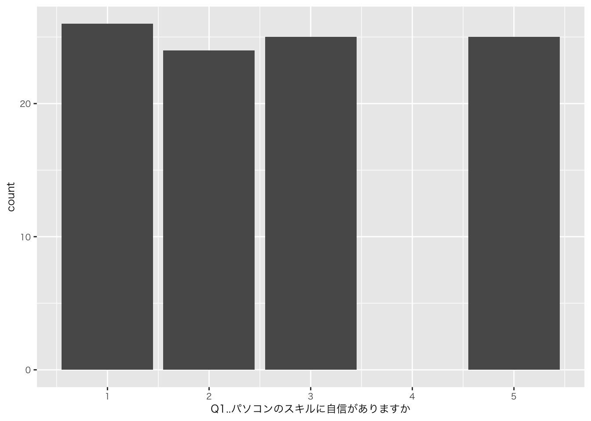
カラム名が数字から始まる場合や.などの記号がある場合、前後に「`」が必要
Ⅵ. 宿題
1. 授業の感想
note | 回答先と締め切り
- 回答先：Google Forms
- 締め切り：2024年6月28日（金）23時59分まで
2. 可視化したいデータ
- データを用意できていない受講生のみ
- アンケートを実施する予定の人は、テスト的に実施して下さい
- カテゴリ（属性：性別（「男性」「女性」）など）と数字からなるアンケートにしましょう
note | 回答先と締め切り
- 回答先：Google Forms
- 締め切り：2024年7月3日（水）10時30分まで
引用文献
ヒーリー，キーラン (2021) 『データ分析のためのデータ可視化入門』, 講談社.
Copyright
苅谷千尋